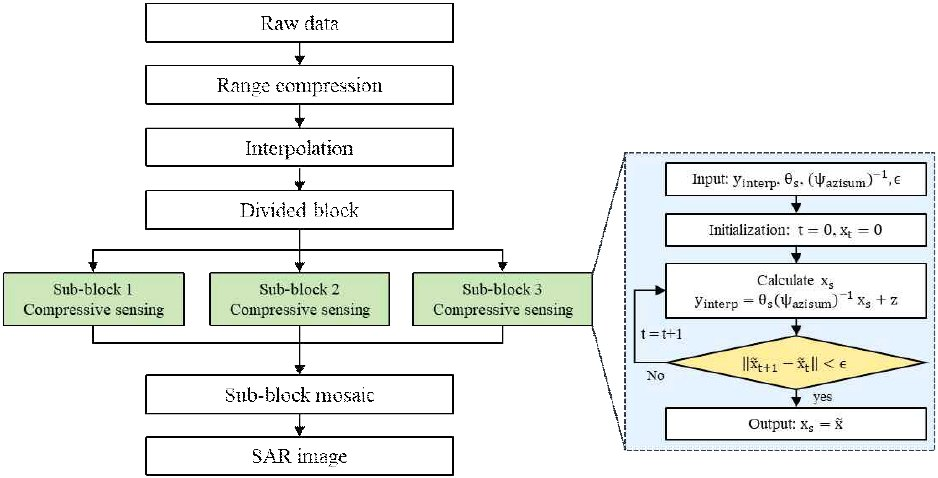

연구실적 · 국내전문학술지
바이스태틱 SAR 영상 구조에 적용 가능한 병렬 압축센싱 기반 Back-Projection 알고리즘 실험적 검증
Experimental Verification of a Parallel Compressive Sensing Based Back-Projection Algorithm for Bistatic SAR Imaging

초록
바이스태틱 SAR는 송신기와 수신기가 분리된 구성을 가지며, 동기화 정밀도, 수신 신호 전력 감소, 거리 해상도 저하와 같은 다양한 기술적 문제 해결을 요구한다. 특히, 송·수신기 간 기하 정합의 복잡성으로 인해 고품질 영상 획득을 위해서는 Back-Projection 알고리즘(BPA)의 정합이 유리하다. 본 논문에서는 FMCW 레이다를 기반으로 국부 발진(LO) 신호를 무선으로 공유하여 바이스태틱 데이터를 획득하고, 모노스태틱 및 바이스태틱 SAR 영상을 비교 및 분석한다. 또한, 데이터 손실 상황에서도 압축센싱 기법을 활용하여 적은 샘플만으로도 일정 수준 이상의 해상도를 확보할 수 있으나 연산 시간이 기하급수적으로 증가하는 문제가 발생한다. 본 논문에서는 병렬 구조의 BPA-CS 알고리즘을 제안하여 블록 크기를 조절함으로써 연산 속도를 크게 향상시키는 동시에 PSNR 등 영상 성능을 유지할 수 있음을 보인다. 이를 통해 고해상도 및 데이터 효율성이 요구되는 레이다 영상화 기술의 실용적 적용 가능성을 제시하며, 바이스태틱 SAR의 효용성을 강화하는 새로운 접근법을 제시한다.
인용
Ji-Hwan Cheong (정지환), Hee-Woo Lee (이희우), Pyeong-Ju Kim (김평주), Yong-Sun Yoo (유용선), Kyeong-Han Shin (신경한), Woo-Kung Lee (이우경), “바이스태틱 SAR 영상 구조에 적용 가능한 병렬 압축센싱 기반 Back-Projection 알고리즘 실험적 검증”, 한국전자파학회논문지, 제36권 3호, 2025년